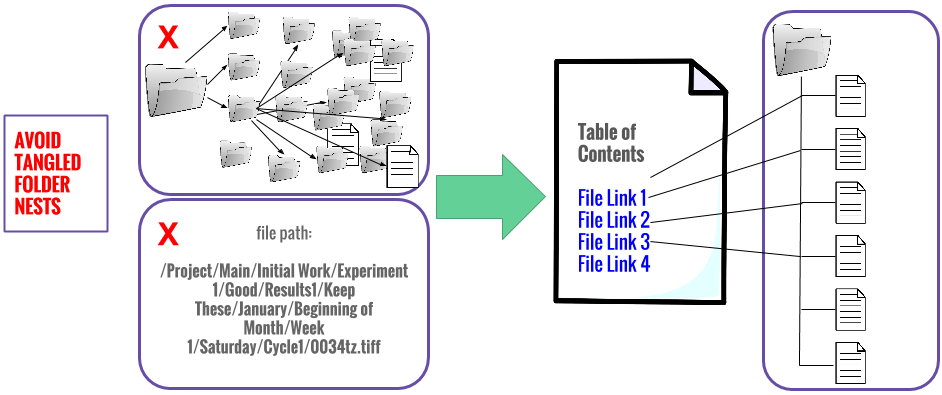

Project Research Data Management
Introduction to NYU Data Services
Nicholas Wolf

Get this presentation:
https://nmwolf.github.io/rdm-intro-dataservices
Research Data Management Overview
- Document data files and methods as you go
- 3-2-1 storage rule
- Use stable formats for long-term use
- Plan for how to share your analysis and data
Documenting Local Files
Documentation with the Open Science Framework
Open Science Framework
- Wiki: document your lab procedures, standards, etc.
- Collaborators: add collaborators of all levels, on different parts of your project
- Components: sub-projects to organize your research
- Version Control: upload files of the same name & OSF will track your versions!
- Add-Ons: use OSF to bring together tools you use
- Registrations: when you have an unchanging version of your project, register it & get a DOI!
Storage Rules!

NYU Storage Resources
| NYU Google Drive | NYU Box | NYU Research Workspace | |
|---|---|---|---|
| Intended use | General data use requiring password access | General data, including sensitive or secure data | High-capacity data storage |
| Storage size | Unlimited | Unlimited | 2 TB |
| Sharing and user control | Yes | Yes | Yes |
| Versioning and file change tracking | Yes | Some | Snapshots of files |
| Funder requirements | Moderate risk security | High risk security | U.S. based data location |
Long Term Storage
Put your data into an archival-friendly format, preferably one that is open source, software agnostic, and lossless.

Better Code Sharing

with Jupyter Notebooks
Code Composer
- in-browser code editing: syntax highlighting & indentation
- take advantage of html/javascript based rich output displays
- "chunk" code to store variables for more efficient iterative code writing
Better Code Sharing
with Jupyter Notebooks
Web Application/Publishing
- a complete record of a session, interleaving code with text, maths, & objects
- can export to LaTex, PDF, slideshows, etc. or webpage
Examples
- Analyzing Whale Tracks, by Roberto De Almeida
- A Reconstruction of 538 2012 Election Model, by Skipper Seabold
Moving a Notebook to the Web
Using NBViewer: https://nbviewer.jupyter.org/:
- Put notebook (.ipynb) file on the web (e.g. Github, Gitlab...somewhere so that URL is http://NAME-OF-NOTEBOOK.ipynb
- Enter the URL into NBViewer.
- Click Go! (check out example here)
Get to know NYU Libraries Data Services
Homepage: https//guides.nyu.edu/dataservices
Thank you! Questions?
Email nicholas.wolf@nyu.edu
Learn more about RDM: guides.nyu.edu/data_management